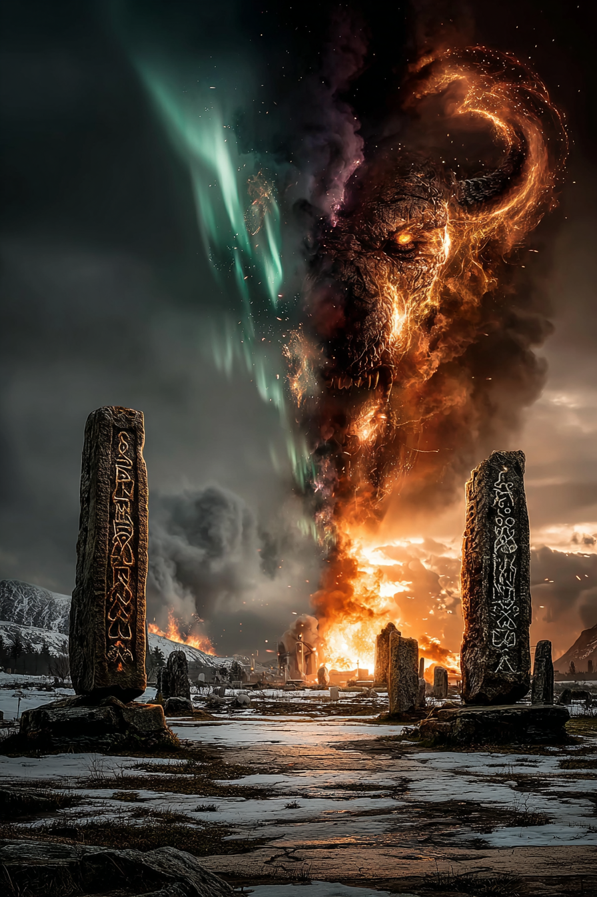
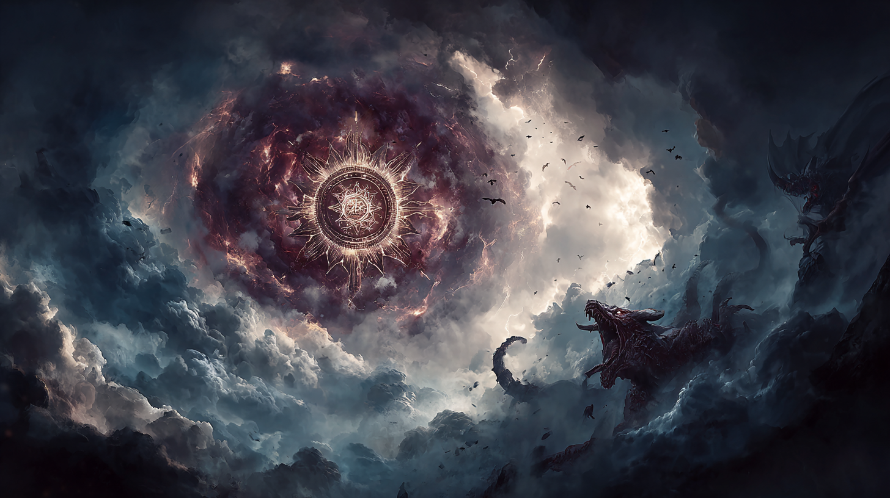
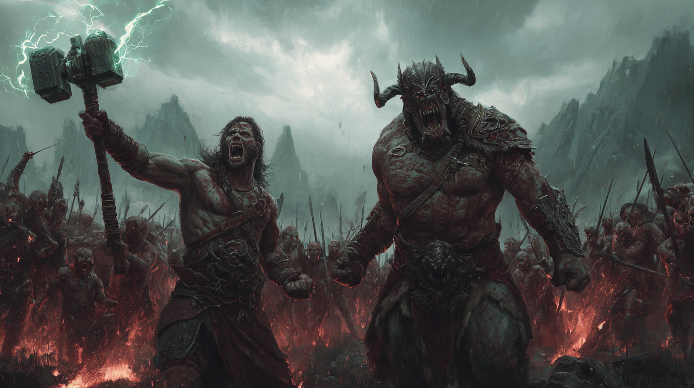
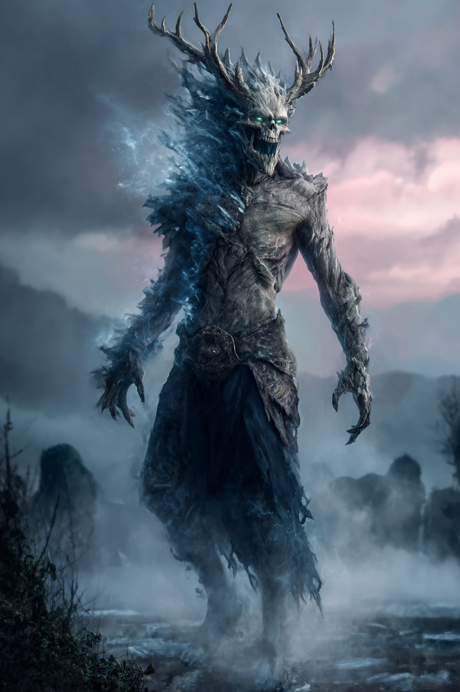
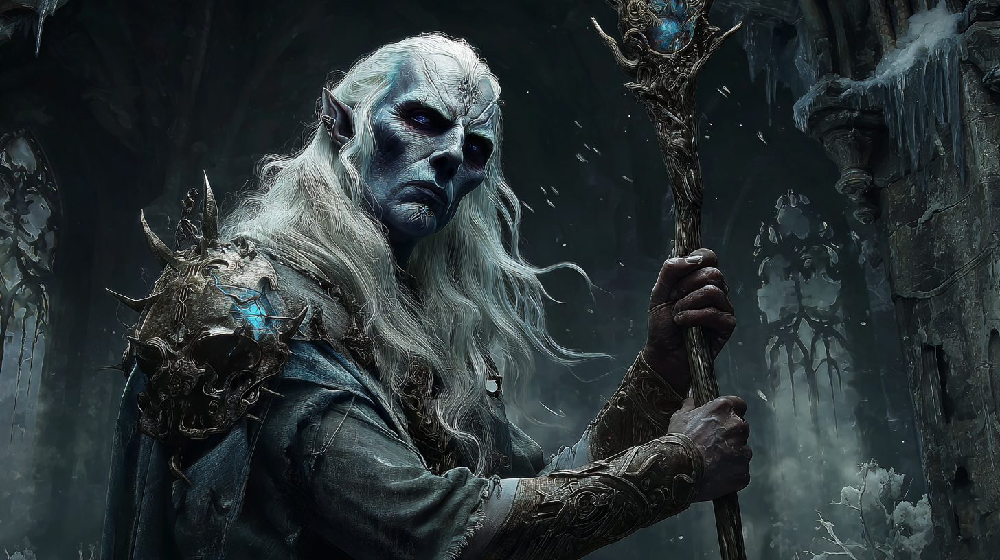
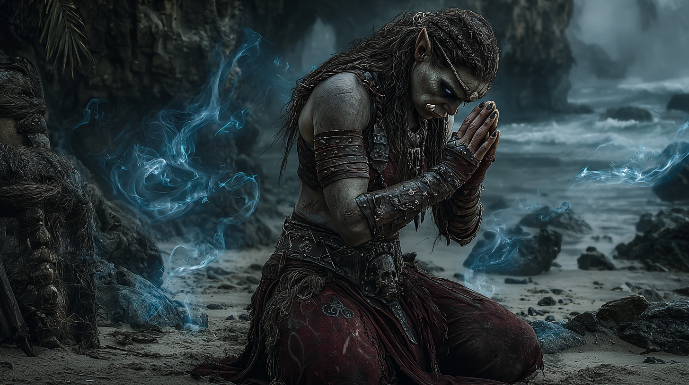

Snabbnav: Kosmologisk Grund · Historisk Tidslinje · Urkhath · Viktiga NPCs · Kampanjstruktur · Thrakka & Mahktahkulten · Möjliga Utgångar

Kosmologisk Grund
Nästa Mörker kommer år 2999 e.D. - om endast 32 år!
Detta är varför Urkhath mobiliserar NU. Han vill vara fri när portarna mellan planen öppnas så han kan leda invasionen som en av Mörkrets huvudfurstar.
De Tre Världarna och Aeons Dröm
AEON (Tidens Väsen - drömmer hela skapelsen)
│
│ fängslad i bur av grundkrafter
↓
┌─────────────────────────────────────────┐
│ HANS DRÖMMAR │
│ │
│ MUNDANA (Fysiska världen) │
│ ↕ Gränsen (Mithera) │
│ SKUGGLANDET (Drömarnas värld) │
│ ↕ Intigheten (Verklighet upplöses)│
│ UNDERJORDEN/AKERVIDDERNA │
│ (Demonernas ursprung) │
│ │
└─────────────────────────────────────────┘

Eonerna & Mörkret
Varje eon = 10,000 år (Aeons dröm delas i cykler)
I slutet av varje eon kommer Mörkret (även kallat Peripetier):
- Portarna mellan planen blir svaga
- Demoner och mörka gudar invaderar Mundana
- De besegrade gudarna mobiliserar sina förkämpar (dödliga varelser)
- Kamp avgör nästa eons härskare
År 2967 e.D. = år 9,967 av aktuell eon
Endast 32 år kvar till nästa Mörker!
Därför mobiliserar Urkhath NU - han vill vara FRI när portarna öppnas.
Förra Mörkret (år 7032-7002 f.D.)
Under det senaste Mörkret invaderade mäktiga demonfurstar Mundana:
- Vhigilah - "Dvärgbane"
- Uvithaan - Mörk gud
- Thanata - Dödens furste
- Urkhath - Hungerns furste
De besegrades av hjältarna Kung Karmath av Zargan och Storkung Khshathra av Kiaz, men Urkhath kunde bara bindas - inte förgöras.
Historisk Tidslinje

Mörkrets Invasion
Portarna mellan planen öppnas. Urkhath och andra demonfurstar attackerar Mundana och Skugglandet samtidigt.
Tirakernas Krig
Storkung Khshathra av Kiaz leder tirakerna mot Urkhath.
Kung Karmath av Zargan leder människorna.
Ashael den Rena (Radh-Kamras härskare) samordnar försvaret.
Vinterglöd, page åt Prins Yelgotha, sviker sina allierade och börjar tjäna Urkhath.
Den Dubbla Bindningen
Urkhath bindas samtidigt i både Mundana och Skugglandet:
- Mundana: 7 Stenstoder fängslat hans essens
- Skugglandet: Bindning vid Intigheten (världarnas gräns)
Vinterglöd blir kvar som vakthållare i Skugglandet - 9000 år av ånger börjar.
Yelgotha Frysas
Prins Yelgotha av det Första Hovet (Månskenshovet innan splittringen) frysas i is i Mithera.
Gränsen mellan Mundana och Skugglandet försvagades vid hans fängslande.
Prolog: Tirakgraven
Gruppen hittar Zentriringen (fragment av Urkhath) i en tirakgrav.
Första stenstoden förstörs → Urkhath börjar vakna.
Yelgotha Väcks
Gruppen hittar och väcker Yelgotha ur hans isfängelse i Mithera.
Hans sista ord: "När ni möter Vinterglöd, säg att Yelgotha skickade er. Han var min page en gång."
Skugglandet & Vinterglöd
Gruppen befinner sig i Skugglandet.
Nästa möte: Vinterglöd i Spegelvända Fortet.
Möjlighet: Återförena de tre manifestationerna (Kuberon + Skymning + Vinterglöd?)
NÄSTA MÖRKER
DEADLINE: Om Urkhath inte stoppas före år 2999 e.D., kommer han att leda nästa invasion och förgöra båda världarna.
Urkhath - Huvudantagonisten

Ursprung och Natur
Uråldrig demonfurste från Underjorden/Akervidderna
Jämförbar med Ahriman (Mörkrets Furste), Vhigilah (Dvärgbane), eller Malgoarh
En av de mäktigaste som någonsin hotat Mundana
Hans Essens
- Hunger personifierad - han är inte bara ond, han ÄR hungern själv
- Köld och längtan - därav kryotropi (frysande kraft)
- Omöjlig att förgöra - kan bara bindas
- Splittrad essens - kan dela sig själv i fragment men förbli sammanhängande
Hans Verkliga Hot
Stark nog att påverka BÅDA Mundana och Skugglandet samtidigt
Varje fragment bär hans vilja - även små bitar (som Zentriringen) kan påverka bäraren.
Hans Ultimata Mål
- Bryta fri från bindningen (BÅDA världarna)
- Leda nästa Mörker (år 2999 e.D.) som en av huvuddemonfurstarna
- Sluka och kontrollera båda världarna
- Uppnå herravälde över nästa eon
Urkhaths Nuvarande Plan (Dubbel Attack)
MUNDANA-ATTACK: ↓ Zentriringen → Zentri (Bärare) ↓ Skugglandet tar Zentri ↓ Fragmentet återvänder till Skugglandet SKUGGLANDET-ATTACK: ↓ Skymning/Avatar vaknar ↓ Försöker korruptera Kuberon ↓ Om lyckad: Gränsen kollapsar KOMBINERAD EFFEKT: Båda bindningarna bryts → Urkhath fri i båda världarna
Viktiga NPCs
Balansens Väktare
Roll: Neutralt väsen som vaktar gränsen mellan Mundana och Skugglandet
Manifestationer: Kuberon kan vara samma väsen som Skymning och Vinterglöd - tre aspekter av samma entitet:
Möjlighet: Om alla tre återförenas kan de återställa gränsens balans.
Kuberon = Balans/Mellanfas · Skymning = Mörk aspekt (Urkhath-korruption) · Vinterglöd = Ljus aspekt (Ånger/upprättelse)
Den Frusna Prinsen
Titel: Prins av det Första Hovet (Månskenshovet innan splittringen)
Historia: Frusen i 700 år i en ispelare i Mithera
Relation till Vinterglöd: Vinterglöd var hans page under Tirakernas Krig
Väckt av gruppen: Kapitel 9, gav 5 varningar om Skugglandet
Hans sista ord: "När ni möter Vinterglöd, säg att Yelgotha skickade er. Han var min page en gång."
Möjligen Kuberons själ/essens · Tredje manifestationen?
Den Motvillige Tjänaren
Historia: Skugglandsfurste som tjänade som page åt Prins Yelgotha
Sveket: Under Tirakernas Krig svek han sina allierade och började tjäna Urkhath
Tragedi: Hans syster dog vid "de varma källorna" - möjligen relaterat till hans svek
9000 år av ånger: Vakthållare över Urkhaths bindning i Skugglandet
Nuvarande motivation: Desperata söker upprättelse och förlåtelse
Ej ond - bara bruten · Vill hjälpa gruppen · Bär enorm skuld
Urkhaths Avatar
Natur: Fragment/avatar av Urkhath själv
Plats: Aktiv i Skugglandet
Mål: Korruptera Kuberon och bryta gränsen mellan världarna
Koppling: Möjligen Kuberons mörka aspekt - skapad när Urkhath försökte korruptera honom
Direkt förlängning av Urkhath · Manipulativ och farlig · Kan inte förhandlas med

Kampanjstruktur - 5 Akter
Status: Avklarad
- Hitta Zentriringen
- Första stenstoden förstörs
- Zentri kidnappas
- Jakten börjar
Status: Avklarad
- Resa genom Muhad, Jargien, Vargnäset
- Samla ledtrådar om Urkhath
- Hitta första allierade
- Upptäck stenstodens natur
Status: Pågående
- Väcka Yelgotha (Klar)
- Alliera med Vinterglöd (Nästa session)
- Kontakta Sanari-alverna
- Samarbeta med dvärgklan Drezin
- Återförena Kuberon-manifestationerna?
Status: Kommande
- Urkhath bryter nästan fri
- Världarna börjar kollapsa in i varandra
- Rädda Zentri från Skugglandet
- Samla alla fragment
- Förbered sista striden
Status: Kommande
- Konfrontation med Urkhath
- Binda demonen i båda världarna
- Återställ gränsen
- Rädda Zentri (eller säg farväl)
- Bestäm världarnas öde
Lita på Vinterglöd? Han svek en gång - kan han litas på nu?
Samarbeta med alver? (Konflikt med Thrakkas tro)
Offra Zentri? Kan vara nödvändigt för att binda Urkhath
Återförena manifestationerna? Riskabelt men kanske nödvändigt
Thrakka & Mahktahkulten

Mahktahkultens Grundprinciper
Tirakernas gudom, dyrkas genom schamaner som talar med dwarkkas (andar som tjänar Mahktah).
Kärnvärderingar:
- Den starkes rätt - Styrka och mod värderas högst
- Mod framför seger - Viktigare att kämpa modigt än att vinna
- Feghet är oförlåtligt - Värsta synden
- Okamratlighet är oförlåtligt - Svek accepteras aldrig
- STRÄNGT FÖRBUD MOT DEMONER - "Det är strängt förbjudet att ha något som helst samröre med demoner"
Thrakkas Religiösa Konflikter i Skugglandet
Problemet: Urkhath är en DEMON. Mahktahkulten förbjuder STRÄNGT allt samröre.
Thrakkas reaktion:
- Extremt fientlig mot allt demoniskt
- Vill KROSSA Urkhath utan kompromiss
- Misstänksam mot Zentri (bar demonringen)
- Misstänksam mot Vinterglöd (tjänade demonen)
"En demon! Mahktah förbannar alla som tjänar mörkrets furstar. Zentri, hur kunde du BÄRA en sådan sak? Och du, Vinterglöd - du SVEK ditt folk för denna vederstygglighet!"
Insikten: Skugglandet är nära andeplanet där tirakiska schamaner vandrar.
Thrakkas upplevelse:
- Känner igen platsen från schamaners berättelser
- Ser dwarkkas (andar) som hon aldrig sett i Mundana
- Känner Mahktahs närvaro starkare här
- Respekterar platsen som helig mark
"Vänta. Jag känner... andar här. Dwarkkas. De bevagar denna plats. Mahktah, Den Mörka, hör din dotter. Jag vandrar på andegränsen."
Dubbelt fördömligt:
- Han svek sina egna (okamratlighet = oförlåtligt)
- Han tjänade en demon (strängt förbjudet)
Möjlig utveckling:
- Mahktah värderar MOD - om Vinterglöd visar mod nu
- Mahktah accepterar GOTTGÖRELSE - om han verkligen ångrar sig
- Den starkes rätt - om han är stark nog att hjälpa
"Nio tusen år av ånger... Mahktah värderar mod, inte ånger. Vad har du GJORT för att gottgöra?"
Enormt problem: Enligt tirakisk tradition är alver korrumperade tiraker som torterades av demoner.
Thrakkas dilemma:
- Alverna är "demonernas verktyg"
- Men Sanari-alverna har bindningsföremål
- Måste välja: ideologisk renhet eller praktisk seger
Möjlig lösning: Mahktah värderar målet - besegra demonen - över metoderna.
Thrakkas Karaktärsutveckling
Allt är svart eller vitt. Regler är absoluta. Demoner = döda. Svikare = döda. Alver = onda.
Måste acceptera kompromisser. Samarbeta med Vinterglöd? Lita på alver? Inre kamp mellan ideologi och överlevnad.
Förstår att MOD och MÅL väger tyngre än regler. Mahktah värderar den som kämpar modigt, även med tvivelaktiga allierade.
Möjligt hjälteoffer för att besegra Urkhath. Mahktah ser den som faller modigt i strid mot demoner som den mest hedervärda av alla.
Möjliga Utgångar
Urkhath bindas på nytt
- Båda bindningarna återställda
- Zentri räddad (kanske)
- Världarna separerade
- Fred i 10,000 år (till nästa Mörker)
Pris: Möjliga offer krävs (Vinterglöd? Thrakka? Kuberon?)
Urkhath bryter fri
- Båda världarna kollapsar
- Zentri förlorad till demonen
- Mörkret kommer tidigt
- Apokalyptisk slutstrid
Möjlig räddning: Hjälteoffer kan skapa ny bindning
Delvis seger
- Urkhath bunden i en värld, inte båda
- Zentri delvis korrupterad
- Gränsen instabil
- Temporär lösning
Konsekvens: Problemet skjuts fram, men världen räddas (för nu)
Gruppen försöker kontrollera Urkhath
- Använda Zentriringen som verktyg
- Försöka binda demonen till sin vilja
- Korruption sprider sig
- Nya antagonister skapas
Risk: Bli det man slåss mot
Ultimat uppoffring
- En (eller flera) karaktärer offrar sig
- Blir själva den nya bindningen
- Urkhath fängslad för evigt
- Världarna räddade
Episk slutsats: Legendarisk status, sånger i 1000 år
- Hur många allierade gruppen samlar
- Om de litar på Vinterglöd
- Om de återförenar Kuberon-manifestationerna
- Om de hittar alla stenstoder
- Hur de hanterar Zentri (rädda eller offra?)
- Thrakkas religiösa val (kompromiss eller ideologisk renhet?)
Sammanfattning
- EON:s officiella kosmologi (Aeon, eonerna, Mörkret)
- Urgammal historia (Tirakernas Krig, 9000 år sedan)
- Personliga tragedier (Vinterglöd, Zentri, Yelgotha)
- Världshotande fara (Urkhath, nästa Mörker om 32 år)
- Kosmisk skala (två världar måste räddas samtidigt)
- Moraliska val (offer, allianser, förlåtelse)
- Religiös dimension (Thrakkas tro vs kompromisser)
Nästa möte med Vinterglöd blir NYCKELMOMENTET där allt börjar klarna för spelarna.
Dokumentet baserat på: KOMPLETT_MASTERPLOT.md
Källa: kampanj_masterplot.md, 5024_legenderhemligheter.txt, skugglandet_kosmologi_alternativ.md,
kampanjkrönika.md, 070 Mahktahkulten.md